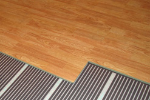

Тёплый пол на балконе -это просто, комфортно и безопасно
Всё для успешного ремонта, отделки и реконструкции балконов и лоджий - от компании «Балкон-центр» из Тюмени! Заказ можно оформить прямо сейчас!
У дополнительного пространства квартиры, которым является ваш балкон, есть особенность - ограниченная площадь, к тому же обычно неудобной «вытянутой» конфигурации. Это затрудняет устройство традиционных систем отопления, поэтому владельцы балконов и лоджий в последнее время всё чаще оборудуют их «тёплыми полами».
Такие полы в зависимости от исполнения могут быть кабельными, плёночными, стержневыми, а по принципу действия - конвекционными и инфракрасными. У инфракрасных полов в качестве нагревательных элементов используются полосы из углеродного полимера с некоторыми добавками. Фактически такие полы - плёночный вариант кабельной системы, они работают от электрической сети напряжением 220 вольт, но их монтаж значительно проще, чем полов из кабеля. Инфракрасные полы экологичны, обладают антиаллергенным действием и способны слегка ионизировать воздух.
Компания «Балкон-центр» предлагает своим клиентам инфракрасные тёплые плёночные полы CALEO, прекрасно сочетающиеся с разными видами напольных покрытий - ламинатом, линолеумом, ковролином. Опыт устройства инфракрасных полов в Тюмени и отзывы потребителей убеждают - мы предлагаем отличное решение!